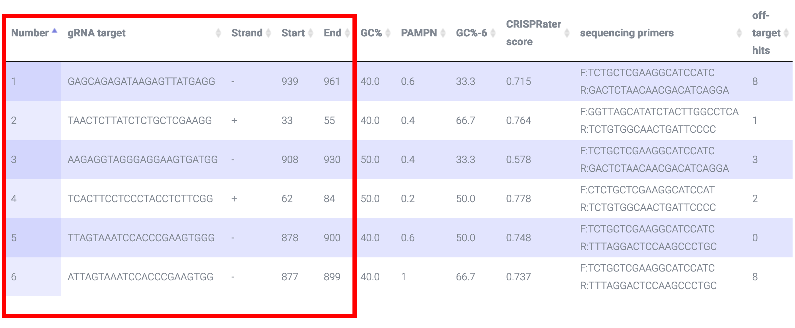
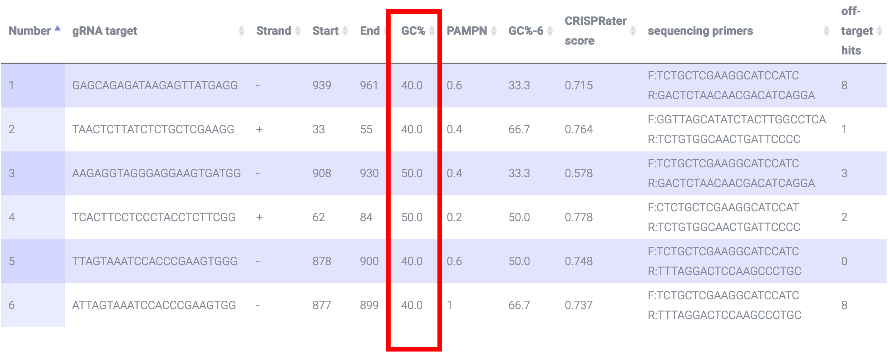
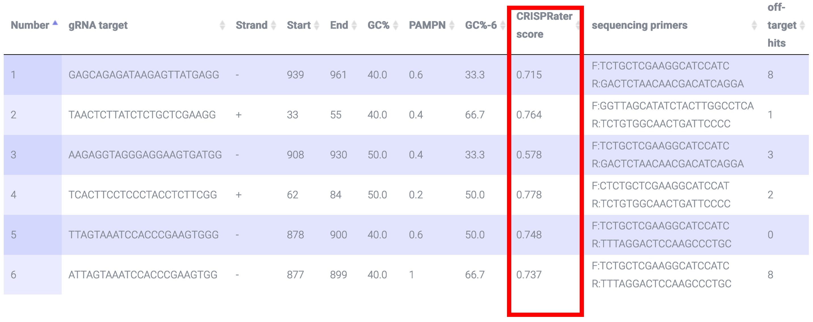
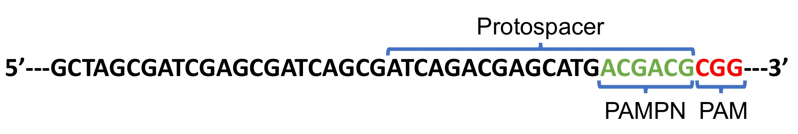
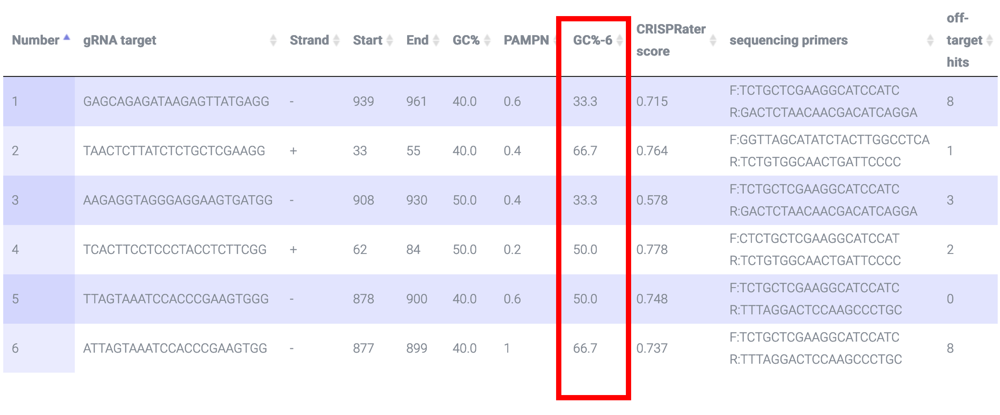
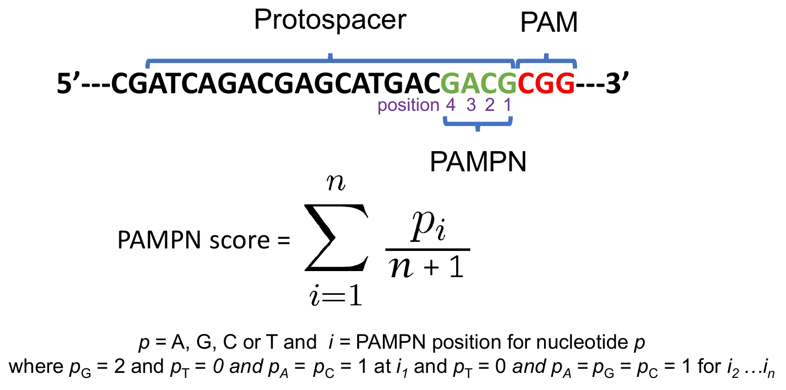
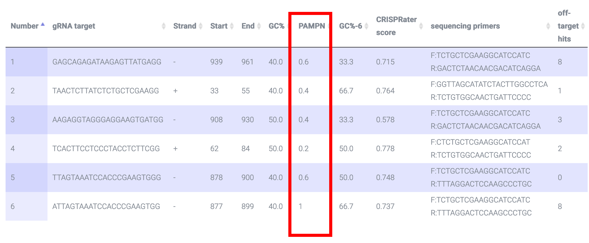
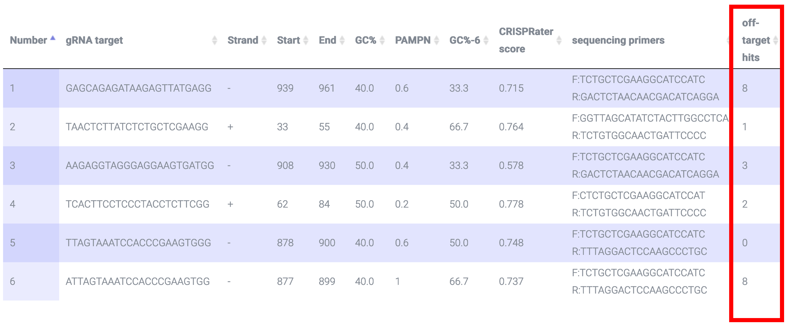
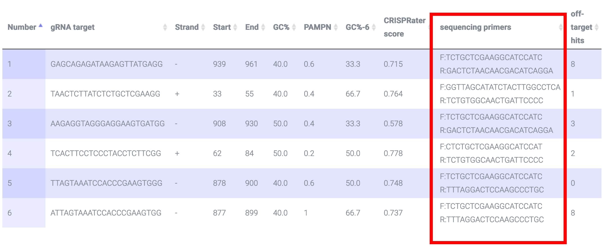
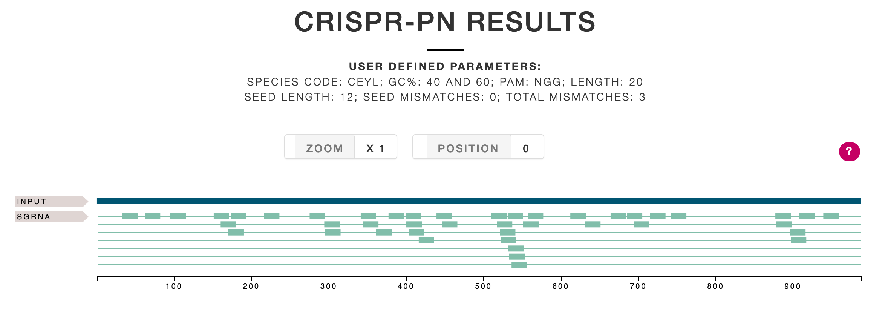

CRISPR-PN is designed to facilitate CRISPR/Cas9 lesion experiments in parasitic nematodes
To add a nematode genome or if you have questions about CRISPR-PN, feel free to reach out by clicking the contact button at the bottom of this page
CRISPR-PN returns a list of sgRNA targets as well as the starting and ending position of each sgRNA target and the strand that it is transcribed from i.e. "+" or "-"; based on this paper 20nt is the optimal length for the sgRNA:

CRISPR-PN returns the sgRNA target GC% (i.e. the protospacer not the PAM) which should be 40-60% to maximize efficiency based on this paper

CRISPR-PN calculates the CRISPRater score. The CRISPRater algorithm is described in this paper. This score describes the efficacy of sgRNA such that a LOW efficacy score is <0.56, a MEDIUM efficacy score is 0.56<=score<=0.74, and a HIGH efficacy score is >0.74:

CRISPR-PN also returns GC% of the 6 bases immediately upstream of PAM i.e. the PAM Proximal Nucleotides (PAMPNs: green nucleotides in image below).This paper shows high GC% (>50%) in PAMPNs increase efficiency:


CRISPR-PN also returns a PAMPN score (max = 1, min = 0). The score is a weighted value from the four nucleotides proximal to the PAM sequence which has been shown here and here that the nucleotide position immediately adjacent to the PAM should be a "G" and not a "T" and the next three proximal nucleotides should not contain "T" in order to maximize efficiency:


CRISPR-PN uses Bowtie ver. 0.12.7 to identify off-target hits, ideally with 0 mismatches in the seed region based on this paper and no more than 3 mismatches in the protospacer based on this paper:

CRISPR-PN employs Primer3 to return sequencing primers that flank the putative lesion site:

Finally, CRISPR-PN results include a graphical visualization of the user input sequence and sgRNA target regions rendered using Feature Viewer:
